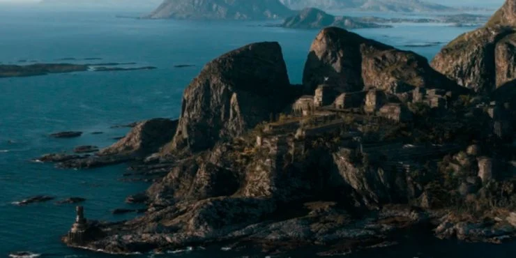
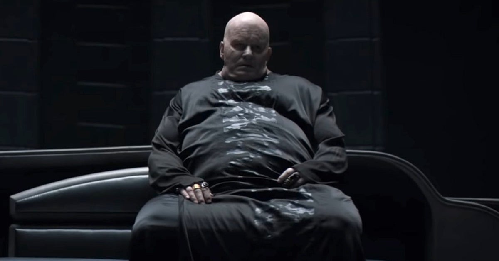

House Atreides is in control of Caladan. The Emperor then gives House Atreides control of Arrakis.
House Atreides leaves Caladan and settles in Arrakis in charge of the spice production.

Shortly after the reign of House Atreides, House Harkonnen commences a seige against House Atreides, taking control of all spice operations and capturing Leto Atreides.

Leto Atreides dies in a failed assassination attempt against Baron Harkonnen, leader of House Harkonnen.
House Harkonnen takes control of Arrakis for the second time.